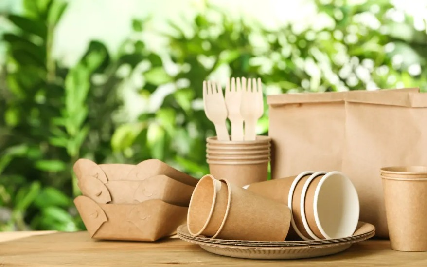

¿Biodegradable o reciclable? La diferencia que importa para tu marca
Muchas marcas usan estos terminos como sinonimos, pero no lo son. Te explicamos cual elegir segun tu producto y valores.

¿Que es Biodegradable?
Materiales que se descomponen de forma natural gracias a la accion de organismos vivos, como hongos o bacterias, en un periodo relativamente corto, volviendo a la tierra sin dejar residuos toxicos. Ejemplo: bolsas de almidon de maiz, pulpa de celulosa.
¿Que es Reciclable?
Materiales que pueden ser recolectados, procesados y transformados de nuevo en materia prima para fabricar nuevos productos, evitando la extraccion de recursos virgenes. Ejemplo: cajas de carton microcorrugado, botellas de vidrio, envases de aluminio.
¿Cual elegir?
Si tu producto genera residuos organicos o humedos, lo biodegradable es ideal. Si buscas un ciclo circular infinito para productos secos o de larga duracion, prioriza lo reciclable.